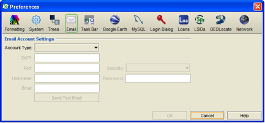

|
Setting up an email account with Specify is useful for sending information that has been requested by colleagues. The requested records can be saved as a Record Set, dropped onto an Information Request in the Interactions side bar and emailed with the click of a button.

Email Preference
This information can be retrieved from your email or network administrator. Be sure to input information for your Outgoing Mail Server settings.
Once the account information has been entered, select the Send Test Email button to verify that the email feature is working properly. This will send a test email to your account. When using a gmail account the test email may not transmit, as gmail is problematic when sending emails to the same account that is receiving the email.
Note: The Specify email feature is not used for receiving or checking email. The information provided must be for the Outgoing Mail Server.